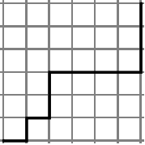

Ken Levasseur, Al Doerr, Michiel Smid, Oscar Levin, Charles M. Grinstead, J. Laurie Snell, Eric Lehman, F. Thomson Leighton, Albert R Meyer, Jeff Erickson, Kenneth P. Bogart, Carol Chritchlow, David Eck, OpenDSA Project, L.J. Miller
In Section 2.1 we investigated the most basic concept in combinatorics, namely, the rule of products. It is of paramount importance to keep this fundamental rule in mind. In Section 2.2 we saw that a subclass of rule-of-products problems, namely, permutations, and we derived a formula as a computational aid to assist us. In this section we will investigate another counting formula, one that is used to count combinations, which are subsets of a certain size.
In many rule-of-products applications the permutation or order is important, as in the situation of the order of putting on one’s socks and shoes; in some cases it is not important, as in placing coins in a vending machine or in the listing of the elements of a set. Order is important in permutations. Order is not important in combinations.
Example2.4.1.Counting Permutations.
How many different ways are there to permute three letters from the set \(A = \{a, b, c, d\}\text{?}\) From the Permutation Counting Formula there are \(P(4,3)=\frac{4!}{(4-3)!} = 24\) different orderings of three letters from \(A\)
Example2.4.2.Counting with No Order.
How many ways can we select a set of three letters from \(A = \{a, b, c, d\}\text{?}\) Note here that we are not concerned with the order of the three letters. By trial and error, abc, abd, acd, and bcd are the only listings possible. To repeat, we were looking for all three-element subsets of the set \(A\text{.}\) Order is not important in sets. The notation for choosing 3 elements from 4 is most commonly \(\binom{4}{3}\) or occasionally \(C(4,3)\text{,}\) either of which is read “4 choose 3” or the number of combinations for four objects taken three at a time.
Definition2.4.3.Binomial Coefficient.
Let \(n\) and \(k\) be nonnegative integers. The binomial coefficient \(\binom{n}{k}\) represents the number of combinations of \(n\) objects taken \(k\) at a time, and is read “\(n\) choose \(k\text{.}\)”
We would now like to investigate the relationship between permutation and combination problems in order to derive a formula for \(\binom{n}{k}\)
Let us reconsider the Counting with No Order. There are \(3 ! = 6\) different orderings for each of the three-element subsets. The table below lists each subset of \(A\) and all permutations of each subset on the same line.
Proof 2: To “construct” a permutation of \(k\) objects from a set of \(n\) elements, we can first choose one of the subsets of objects and second, choose one of the \(k!\) permutations of those objects. By the rule of products,
and solving for \(\binom{n}{k}\) we get the desired formula.
Example2.4.5.Flipping Coins.
Assume an evenly balanced coin is tossed five times. In how many ways can three heads be obtained? This is a combination problem, because the order in which the heads appear does not matter. We can think of this as a situation involving sets by considering the set of flips of the coin, 1 through 5, in which heads comes up. The number of ways to get three heads is \(\binom{5}{3}= \frac{5 \cdot 4}{2 \cdot 1} = 10\text{.}\)
Example2.4.6.Counting five ordered flips two ways.
We determine the total number of ordered ways a fair coin can land if tossed five consecutive times. The five tosses can produce any one of the following mutually exclusive, disjoint events: 5 heads, 4 heads, 3 heads, 2 heads, 1 head, or 0 heads. For example, by the previous example, there are \(\binom{5}{3}=10\) sequences in which three heads appear. Counting the other possibilities in the same way, by the law of addition we have:
Of course, we could also have applied the extended rule of products, and since there are two possible outcomes for each of the five tosses, we have \(2^5 = 32\) ways.
You might think that counting something two ways is a waste of time but solving a problem two different ways often is instructive and leads to valuable insights. In this case, it suggests a general formula for the sum \(\sum_{k=0}^n \binom{n}{k}\text{.}\) In the case of \(n = 5\text{,}\) we get \(2^5\) so it is reasonable to expect that the general sum is \(2^n\text{,}\) and it is. A logical argument to prove the general statment simply involves generalizing the previous example to \(n\) coin flips.
Example2.4.7.A Committee of Five.
A committee usually starts as an unstructured set of people selected from a larger membership. Therefore, a committee can be thought of as a combination. If a club of 25 members has a five-member social committee, there are \(\binom{25}{5}=\frac{25\cdot 24\cdot 23\cdot 22\cdot 21}{5!} = 53130\) different possible social committees. If any structure or restriction is placed on the way the social committee is to be selected, the number of possible committees will probably change. For example, if the club has a rule that the treasurer must be on the social committee, then the number of possibilities is reduced to \(\binom{24}{4}=\frac{24 23 22 21}{4!} = 10626\text{.}\)
If we further require that a chairperson other than the treasurer be selected for the social committee, we have \(\binom{24}{4} \cdot 4 = 42504\) different possible social committees. The choice of the four non-treasurers accounts for the factor \(\binom{24}{4}\) while the need to choose a chairperson accounts for the 4.
By simply applying the definition of a Binomial Coefficient as a number of subsets we see that there is \(\binom{n}{0} = 1\) way of choosing a combination of zero elements from a set of \(n\text{.}\) In addition, we see that there is \(\binom{n}{n} = 1\) way of choosing a combination of \(n\) elements from a set of \(n\text{.}\)
We could compute these values using the formula we have developed, but no arithmetic is really needed here. Other properties of binomial coefficients that can be derived using the subset definition will be seen in the exercises
Subsection2.4.2The Binomial Theorem
The binomial theorem gives us a formula for expanding \(( x + y )^{n}\text{,}\) where \(n\) is a nonnegative integer. The coefficients of this expansion are precisely the binomial coefficients that we have used to count combinations. Using high school algebra we can expand the expression for integers from 0 to 5:
In the expansion of \((x + y)^{5} \) we note that the coefficient of the third term is \(\binom{5}{3} = 10\text{,}\) and that of the sixth term is \(\binom{5}{5}=1\text{.}\) We can rewrite the expansion as
In summary, in the expansion of \(( x + y )^{n}\) we note:
The first term is \(x^n\) and the last term is \(y^n\text{.}\)
With each successive term, exponents of \(x\) decrease by 1 as those of \(y\) increase by 1. For any term the sum of the exponents is \(n\text{.}\)
The coefficient of \(x^{n-k} y^k\) is \(\binom{n}{k}\text{.}\)
The triangular array of binomial coefficients is called Pascal’s triangle after the seventeenth-century French mathematician Blaise Pascal. Note that each number in the triangle other than the 1’s at the ends of each row is the sum of the two numbers to the right and left of it in the row above.
Theorem2.4.9.The Binomial Theorem.
If \(n \geq 0\text{,}\) and \(x\) and \(y\) are numbers, then
This theorem will be proven using a logical procedure called mathematical induction, which will be introduced in Chapter 3.
Example2.4.10.Identifying a term in an expansion.
Find the third term in the expansion of \((x-y)^{4} = (x+(-y))^{4}\text{.}\) The third term, when \(k=2\text{,}\) is \(\binom{4}{2} x^{4-2} (-y)^2 = 6 x^2 y^2\text{.}\)
Example2.4.11.A Binomial Expansion.
Expand \((3 x - 2 )^{3}\text{.}\) If we replace \(x\) and \(y\) in the Binomial Theorem with \(3x\) and \(-2\text{,}\) respectively, we get
A bridge hand is a 13 element subset of a standard 52 card deck. The order in which the cards come to the player doesn’t matter. From the point of view of a single player, the number of possible bridge hands is \(\binom{52}{13}\text{,}\) which can be easily computed with \(Sage\text{.}\)
In bridge, the location of a hand in relation to the dealer has some bearing on the game. An even truer indication of the number of possible hands takes into account \(each\) player’s possible hand. It is customary to refer to bridge positions as West, North, East and South. We can apply the rule of product to get the total number of bridge hands with the following logic. West can get any of the \(\binom{52}{13}\) hands identified above. Then North get 13 of the remaining 39 cards and so has \(\binom{39}{13}\) possible hands. East then gets 13 of the 26 remaining cards, which has \(\binom{26}{13}\) possibilities. South gets the remaining cards. Therefore the number of bridge hands is computed using the Product Rule.
Exercises2.4.4Exercises
1.
The judiciary committee at a college is made up of three faculty members and four students. If ten faculty members and 25 students have been nominated for the committee, how many judiciary committees could be formed at this point?
Answer.
\(\binom{10}{3}\cdot \binom{25}{4}=1,518,000\)
2.
Suppose that a single character is stored in a computer using eight bits.
a. How many bit patterns have exactly three 1’s?
b. How many bit patterns have at least two 1’s?
Hint.
Think of the set of positions that contain a 1 to turn this into a question about sets.
The congressional committees on mathematics and computer science are made up of five representatives each, and a congressional rule is that the two committees must be disjoint. If there are 385 members of congress, how many ways could the committees be selected?
5.
The image below shows a 6 by 6 grid and an example of a lattice path that could be taken from \((0,0)\) to \((6,6)\text{,}\) which is a path taken by traveling along grid lines going only to the right and up. How many different lattice paths are there of this type? Generalize to the case of lattice paths from \((0,0)\) to \((m,n)\) for any nonnegative integers \(m\) and \(n\text{.}\)

Figure2.4.12.A lattice path
Hint.
Think of each path as a sequence of instructions to go right (R) and up (U).
Answer.
Each path can be described as a sequence or R’s and U’s with exactly six of each. The six positions in which R’s could be placed can be selected from the twelve positions in the sequence \(\binom{12}{6}\) ways. We can generalize this logic and see that there are \(\binom{m+n}{m}\) paths from \((0,0)\) to \((m,n)\text{.}\)
6.
How many of the lattice paths from \((0,0)\) to \((6,6)\) pass through \((3,3)\) as the one in Figure 12 does?
7.
A poker game is played with 52 cards. At the start of a game, each player gets five of the cards. The order in which cards are dealt doesn’t matter.
How many “hands” of five cards are possible?
If there are four people playing, how many initial five-card “hands” are possible, taking into account all players and their positions at the table? Position with respect to the dealer does matter.
A flush in a five-card poker hand is five cards of the same suit. The suits are spades, clubs, diamonds and hearts. How many spade flushes are possible in a 52-card deck? How many flushes are possible in any suit?
9.
How many five-card poker hands using 52 cards contain exactly two aces?
In poker, a full house is three-of-a-kind and a pair in one hand; for example, three fives and two queens. How many full houses are possible from a 52-card deck? You can use the sage cell in the SageMath Note to do this calculation, but also write your answer in terms of binomial coefficients.
11.
A class of twelve computer science students are to be divided into three groups of 3, 4, and 5 students to work on a project. How many ways can this be done if every student is to be in exactly one group?
Explain in words why the following equalities are true based on number of subsets, and then verify the equalities using the formula for binomial coefficients.
\(\displaystyle \binom{n}{1} = n\)
\(\binom{n}{k} = \binom{n}{n-k}\text{,}\)\(0 \leq k \leq n\)
13.
There are ten points, \(P_1, P_2, \dots , P_{10}\) on a plane, no three on the same line.
How many lines are determined by the points?
How many triangles are determined by the points?
Answer.
\(\displaystyle \binom{10}{2}=45\)
\(\displaystyle \binom{10}{3}=120\)
14.
How many ways can \(n\) persons be grouped into pairs when \(n\) is even? Assume the order of the pairs matters, but not the order within the pairs. For example, if \(n=4\text{,}\) the six different groupings would be
Use the binomial theorem to prove that if \(A\) is a finite set, then \(\lvert P(A)\rvert =2^{\lvert A \rvert}\)
Answer.
Assume \(\lvert A \rvert =n\text{.}\) If we let \(x=y=1\) in the Binomial Theorem, we obtain \(2^n=\binom{n}{0}+\binom{n}{1}+\cdots +\binom{n}{n}\text{,}\) with the right side of the equality counting all subsets of \(A\) containing \(0, 1, 2, \dots , n\) elements. Hence \(\lvert P(A)\rvert =2^{\lvert A \rvert}\)
16.
A state’s lottery involves choosing six different numbers out of a possible 36. How many ways can a person choose six numbers?
What is the probability of a person winning with one bet?
17.
Use the binomial theorem to calculate \(9998^3\text{.}\)
In the card game Blackjack, there are one or more players and a dealer. Initially, each player is dealt two cards and the dealer is dealt one card down and one facing up. As in bridge, the order of the hands, but not the order of the cards in the hands, matters. Starting with a single 52 card deck, and three players, how many ways can the first two cards be dealt out? You can use the sage cell in the SageMath Note to do this calculation.